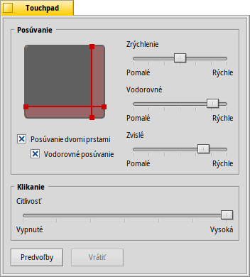

Touchpad
Touchpad
| Panel: | ||
| Umiestnenie: | /boot/system/preferences/Touchpad | |
| Nastavenia: | ~/config/settings/Touchpad_settings |
Tento panel ponúka niekoľko nastavení súvisiacich s touchpadom, čím je zaujímavý hlavne pre používateľov notebookov.
Presúvaním červenej zvislej a vodorovnej čiary nastavujete oblasť posúvania (mierne červenšia oproti všeobecným šedým oblastiam dotyku). Hýbaním vášho prsta po tejto časti touchpadu sa bude zodpovedajúcim spôsobom posúvať aj posuvník.
Vpravo sa nachádzajú posuvníky na nastavenie všeobecného zrýchlenia a vodorovnej/zvislej rýchlosti posúvania.
Nastavenie zrýchlenia určuje, ako rýchlo sa má zoznam posúvať keď rýchlo prstom presvištíte po oblasti posúvania. Rýchlosti posúvania ovládajú všeobecnú rýchlosť pri normálnom hýbaní.
Pod znázornením touchpadu sa nachádzajú dve zaškrtávacie políčka na „Posúvanie dvomi prstami“ pre zvislé aj vodorovné posúvanie. Rovnobežným hýbaním oboma prstami zvisle alebo vodorovne posúvate posuvníky okien. Aspoň pre mňa to funguje najlepšie s jedným prstom z pravej a jedným z ľavej ruky.
Ak vám toto nastavenie vyhovuje, môžete sa úplne zbaviť oblastí posúvania a namiesto toho používať celý touchpad na normálnu navigáciu..
V dolnej časti je ďalší posuvník, ktorý nastavuje citlivosť na klikanie. Ak sa vám zdá, že vaše kliknutia sú často ignorované, zvýšte citlivosť. Ak sa vám zdá, že často nechcene klikáte, tak citlivosť skúste znížiť.
| vráti všetko na predvolené hodnoty | ||
| vráti nastavenia, ktoré boli aktívne v momente zapnutia nastavení Touchpadu. |
Ešte jedna rada, ktorá sa netýka nastavení Touchpadu, no súvisí s témou:
Vedeli ste, že môžete položky uchopiť a pretiahnuť iba s použitím touchpadu, teda bez tlačidiel? Iba spravte dvojité kliknutie bez toho, aby ste prst po druhom kliknutí zdvihli. Vybraná položka sa tak prilepí na kurzor myši a vy ho môžete pretiahnuť hýbaním vášho prsta. Zdvihnutím vášho prsta znova ikonu pustíte.
Ak váš prst dosiahol okraj touchpadu počas ťahania ikony, no váš kurzor ešte nedosiahol okraj obrazovky, ako môžete ďalej ťahať ikonu? Akonáhle zdvihnete váš prst, ikona bude pustená.
V závislosti od vášho hardvéru máte možno túto užitočnú funkciu: Jednoducho nechajte váš prst na hrane touchpadu bez toho, aby ste ho zdvihli. Kurzor sa tak bude automaticky posúvať ďalej.